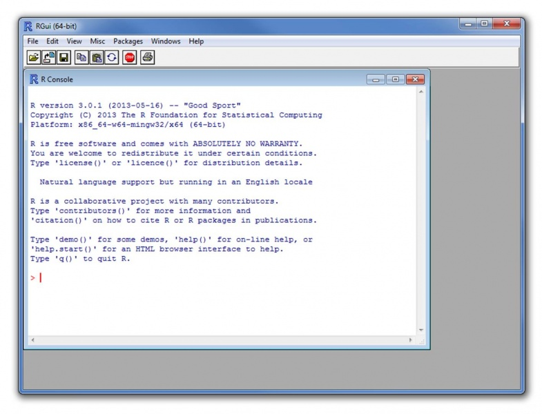
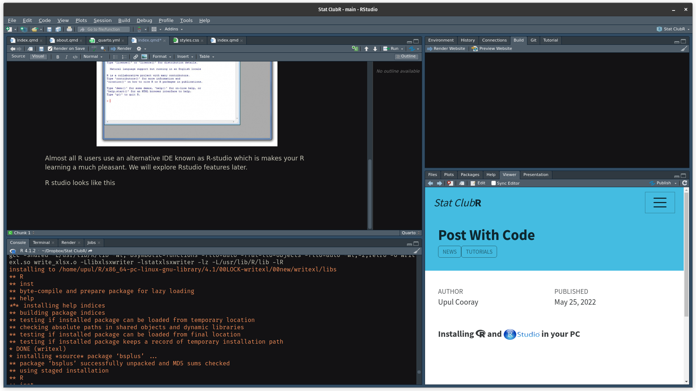
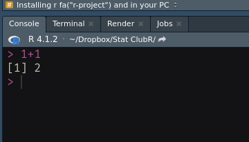

Installing and  in your PC
in your PC
You need R language installed in your PC to start coding in R. Default graphical user interface of R is not very pleasant to work with.
Looks like this..!

Almost all R users use an alternative IDE known as R-studio which is makes your R learning a much pleasant. We will explore Rstudio features later.
R studio looks like this!

Installation of R and Rstudio is very simple!
Step 1: Go to r-project website [click here] and download the installer for your PC’s OS.
Step 2: Execute the installer with all the default settings (make sure R is install into the PATH - normally this is the default behavior)
Step 3: Navigate to this page and download the Rstudio installer for your PC’s OS and run it.
Now you are all set to start coding in R…!!!
Check your installation by opening Rstudio and just typing 1 + 1 in the console window and press Enter key.
